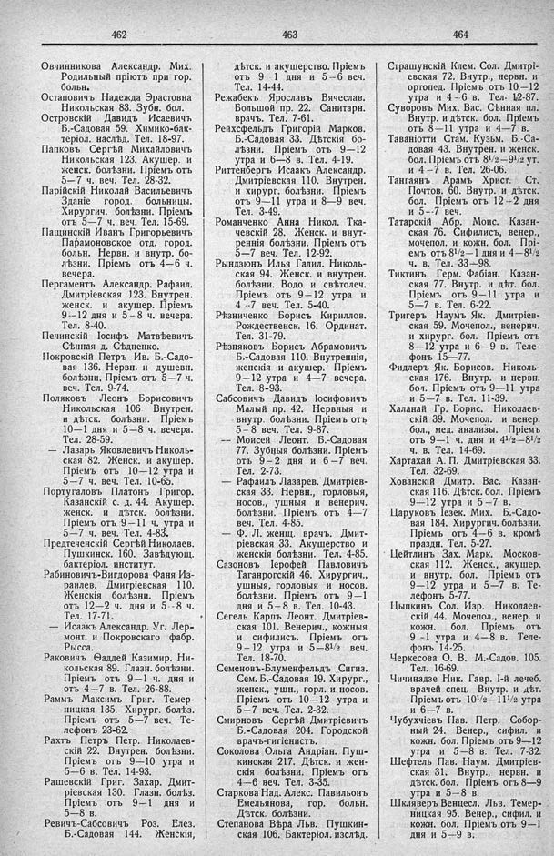

Лист источника 286
Скан

Распознанный текст
462
Овчинникова Александр. Мих.
Родильный пріютъ при гор.
больн.
Остаповичъ Надежда Эрастовна
Никольская 83. Зубн. бол.
Островскій Давидъ Исаевичъ
Б.-Садовая 59. Химико-бак-
теріол. наслѣд. Тел. 18-97.
Папковъ Сергѣй Михайловичъ
Никольская 123. Акушер. и
женск. болѣзни. Пріемъ отъ
5—7 ч. веч. Тел. 28-32.
Парійскій Николай Васильевичъ
Зданіе город. больницы.
Хирургич. болѣзни. Пріемъ
отъ 5—7 ч. веч. Тел. 15-69.
Пащинскій Иванъ Григорьевичъ
Парамоновское отд. город.
больн. Нервн. и внутр. бо-
лѣзни. Пріемъ отъ 4—6 ч.
вечера.
Пергаментъ Александр. Рафаил.
Дмитріевская 123. Внутрен.
женск. и акушер. Пріемъ
9--12 дня и 5—8 ч. вечера.
Тел. 8-40.
Печинскій Іосифъ Матвѣевичъ
Сѣнная д. Сѣдненко.
Покровскій Петръ Ив. Б.-Садо-
вая 136. Нервн. и душевн.
болѣзни, Пріемъ отъ 5—7 ч.
веч. Тел. 9-74.
Поляковъ Леонъ Борисовичъ
Никольская 106. Внутрен.
и дѣтск. болѣзни. Пріемъ
10—1 дня и 5—8 ч. вечера.
Тел. 28-59.
— Лазарь Яковлевичъ Николь-
ская 82. Женск. и акушер.
Пріемъ отъ 10—12 утра и
5—7 ч. веч. Тел. 10-65.
Португаловъ Платонъ Григор.
Казанскій с. д. 44. Акушер.
женск. и дѣтск. болѣзни.
Пріемъ отъ 9—11 ч. утра и
5—7 ч. веч. Тел. 4-83.
Предтеченскій Сергѣй Николаев.
Пушкинск. 160. Завѣдующ.
бактеріол. институт.
Рабиновичъ-Вигдорова Фаня Из-
раилев. Дмитріевская 110.
Женскія болѣзни. Пріемъ
отъ 12—2 ч. дня и 5--8 ч.
Тел. 17-71.
— Исаакъ Александр. Уг. Лер-
монт. и Покровскаго фабр.
Рысса.
Раковичъ Ѳаддей Казимир. Ни-
кольская 89. Глазн. болѣзни.
Пріемъ отъ 9—1 ч. дня и
отъ 4—7 в. Тел. 26-88.
Раммъ Максимъ Григ. Темер-
ницкая 135. Хирург. болѣз.
Пріемъ отъ 5—7 веч. Те-
лефонъ 23-62.
Рахтъ Петръ Петр. Николаев-
скій 22. Внутрен. болѣзни.
Пріемъ отъ 9—10 утра и
5—6 в. Тел. 14-93.
Рашевскій Григ. Захар. Дмит-
ріевская 130. Глазн. болѣз.
Пріемъ отъ 9—1 дня и
5—8 в.
Ревичъ-Сабсовичъ Роз. Елез.
Б.-Садовая 144. Женскія,
463
дѣтск. и акушерство. Пріемъ
отъ 9 - 1 дня и 5—6 веч.
Тел. 14-44.
Режабекъ Ярославъ Вячеслав.
Большой пр. 22. Санитарн.
врачъ. Тел. 7-61.
Рейхсфельдъ Григорій Марков.
Б.-Садовая 33. Дѣтскія бо-
лѣзни. Пріемъ отъ 9—12
утра и 6—8 в. Тел. 4-19.
Риттенбергъ Исаакъ Александр.
Дмитріевская 110. Внутрен.
и хирург. болѣзни. Пріемъ
отъ 9--11 утра и 8—9 веч.
Тел. 3-49.
Романченко Анна Никол. Тка-
чевскій 28. Женск. и внут-
реннія болѣзни. Пріемъ отъ
5—7 веч. Тел. 12-92.
Рындзюнъ Илья Галил. Николь-
ская 94. Женск. и внутрен.
болѣзни. Водо и свѣтолеч.
Пріемъ отъ 9—12 утра и
4 --7 веч. Тел. 5-40.
Рѣзниченко Борисъ Кириллов.
Рождественск. 16. Ординат.
Тел. 31-79.
Рѣзняковъ Борисъ Абрамовичъ
Б.-Садовая 110. Внутреннія,
женскія и акушер. Пріемъ
9--12 утра и 4—7 вечера.
Тел. 8-93.
Сабсовичъ Давидъ Іосифовичъ
Малый пр. 42. Нервныя и
внутр. болѣзни. Пріемъ отъ
5—8 веч. Тел. 9-87.
-- Моисей Леонт. Б.-Садовая
77. Зубныя болѣзни. Пріемъ
отъ 9—2 дня и 6—7 веч.
Тел. 2-73.
— Рафаилъ Лазарев. Дмитріев-
ская 33. Нервн., горловыя,
носов., ушныя и венерич.
болѣзни. Пріемъ отъ 4—7
веч. Тел. 4-85.
— Ф. Л. женщ. врачъ. Дмит-
ріевская 33. Акушерство и
женскія болѣзни. Тел. 4-85.
Сазоновъ Іерофей Павловичъ
Таганрогскій 46. Хирургич.,
ушныя, горловыя и носов.
болѣзни. Пріемъ отъ 9—1
дня и 5—8 в. Тел. 10-43.
Сегель Карпъ Леонт. Дмитріев-
ская 101. Венерич., кожныя
и сифилисъ. Пріемъ отъ
9—12 утра и 5—8 1/2 веч.
Тел. 18-70.
Семеновъ-Блуменфельдъ Сигиз.
Сем. Б.-Садовая 19. Хирург.,
женск., ушн., горл. и носов.
Пріемъ отъ 10—12 утра и
5—7 веч. Тел. 2-32.
Смирновъ Сергѣй Дмитріевичъ
Б.-Садовая 204. Городской
врачъ-гигіенистъ.
Соколова Ольга Андріан. Пуш-
кинская 217. Дѣтск. и жен-
скія болѣзни. Пріемъ отъ
4--6 веч. Тел. 3-35.
Старкова Над. Алекс. Павильонъ
Емельянова, гор. больн.
Дѣтск. болѣзни.
Степанова Вѣра Льв. Пушкин-
ская 106. Бактеріол. изслѣд.
464
Страшунскій Клем. Сол. Дмитрі-
евская 72. Внутр., нервн. и
ортопед. Пріемъ отъ 10—12
утра и 4—6 в. Тел. 12-87.
Суворовъ Мих. Вас. Сѣнная пл.
Внутр. и дѣтск. бол. Пріемъ
отъ 8—11 утра и 4—7 в.
Таваніотти Стам. Кузьм. Б.-Са-
довая 43. Внутрен. и женск.
бол. Пріемъ отъ 8 1/2—9 1/2 ут.
и 4—7 в. Тел. 26-06.
Тангаянъ Арамъ Христ. Ст.
Почтов. 60. Внутр. и дѣтск.
бол. Пріемъ отъ 12--2 дня
и 5--7 веч.
Татарскій Абр. Моис. Казан-
ская 76. Сифилисъ, венер.,
мочепол. и кожн. бол. Прі-
емъ отъ 8 1/2—1 дня и 4—8 1/2
ч. в. Тел. 33—98.
Тиктинъ Герм. Фабіан. Казан-
ская 77. Внутр. и дѣт. бол.
Пріемъ отъ 9—11 утра и
5—7 в. Тел. 6-22.
Тригеръ Наумъ Як. Дмитріев-
ская 59. Мочепол., венерич.
и хирург. бол. Пріемъ отъ
8—12 утра и 6—9 в. Теле-
фонъ 15—77.
Фидлеръ Як. Борисов. Николь-
ская 176. Внутр. и нервн.
бол. Пріемъ отъ 9—11 утра
и 5—7 в. Тел. 11-39.
Халанай Гр. Борис. Николаев-
скій 39. Мочепол. и венер.
бол., мед. анализы. Пріемъ
отъ 9—1 ч. дня и 4 1/2—8 1/2
ч. в. Тел. 14-69.
Хартахай А. П. Дмитріевская 33.
Тел. 32-69.
Хованскій Дмитр. Вас. Казан-
ская 116. Дѣтск. бол. Пріемъ
9—12 утра и 5—7 в.
Царуковъ Іезек. Мих. Б.-Садо-
вая 184. Хирургич. болѣзни.
Пріемъ отъ 4—6 в. кромѣ
праздн. Тел. 5-27.
Цейтлинъ Зах. Марк. Москов-
ская 112. Женск., акушер.
и внутр. бол. Пріемъ отъ
9—12 утра и 5—7 в. Те-
лефонъ 5-77.
Цыпкинъ Сол. Изр. Николаев-
скій 44. Мочепол., венер. и
кожн. бол. Пріемъ отъ
9 -1 утра и 4—8 в. Теле-
фонъ 14-25.
Черкесова О. В. М.-Садов. 105.
Тел. 16-69.
Чичинадзе Ник. Гавр. 1-й лечеб.
врачей спец. Внутр. и дѣт.
Пріемъ отъ 10 1/2—11 1/2 утра
и 6—7 в.
Чубухчіевъ Пав. Петр. Собор-
ный 24. Венер., сифил. и
кожн. бол. Пріемъ отъ 9—12
утра и 5—8 в. Тел. 7-32.
Шефтель Пав. Наум. Дмитріев-
ская 31. Внутр., нервн. и
дѣтск. бол. Пріемъ отъ 8—9
утра и 5—8 в.
Шкляревъ Венцесл. Льв. Темер-
ницкая 95. Венер., сифил. и
кожн. бол. Пріемъ отъ 9—1
дня и 5—9 в.